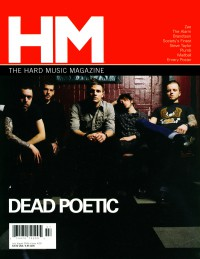

CMnexus
:
Contemporary Christian culture, music, and media.
Magazines
Profiles
Dove Awards
cmnexus.org
CM
nexus
→
Profiles
→
D
Dead Poetic
On the cover

July 2006
HM
Media coverage
Jul 2002 in
HM
"Hardnews: Lebanon Walls", by
Lee Haley
Mar 2004 in
7ball
"From The Road: Dead Poetic"
May 2004 in
HM
"Hardnews: Dead Poetic", by
Bradley Spitzer
Nov 2005 in
HM
"Hardnews: Beloved: The Aftermath", by
Eric W Alexy
Apr 2006 in
CCM
"!Hard Music", by
Doug Van Pelt
Jul 2006 in
HM
"Dead Poetic", by
David Stagg
Jul 2006 in
CCM
"Insider: A New Lease On Life", by
John J. Thompson
Albums & reviews:
2002:
Four Wall Blackmail
Jul 2002 in
HM
, by
Kern County Kid
Sep 2002 in
YouthWorker
, by
Dave Urbanski
Oct 2002 in
CCM
, by
Sydney Alexander
Apr 2003 in
Nor'Easter
, by
Chris Gatto
2004:
New Medicines
May 2004 in
HM
, by
Colin Hobbs
May 2004 in
7ball
, by
Clark Orr
Jul 2004 in
YouthWorker
, by
Dave Urbanski
2006:
Vices
Jul 2006 in
HM
, by
John J. Thompson
Aug 2006 in
CCM
, by
Doug Van Pelt
2007:
The Finest
Award Summary
(
Nominations
/
Wins
)
Dove Awards
2005 Dove Awards
Recorded Music Packaging
:
New Medicines
CMnexus
(noun)
The magazine index
of modern music
and Christianity
© 2011 CMnexus. Last updated August 2025.
Contact:
Rants and other correspondence to:
editor -AT- cmnexus
-DØT- org
About